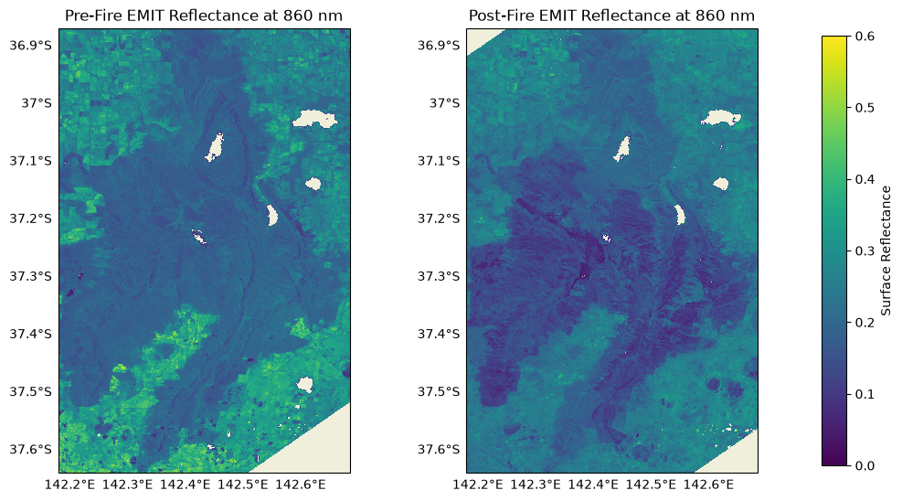
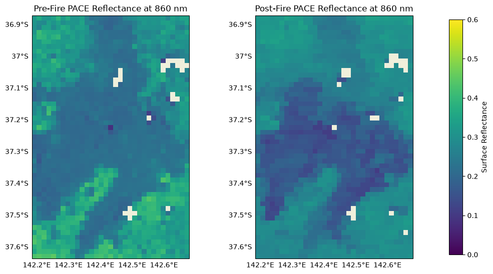
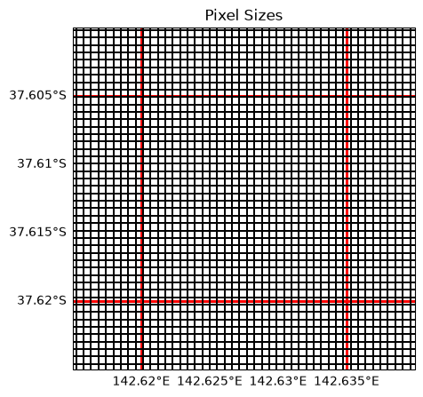
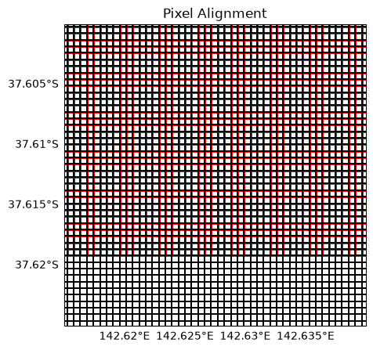
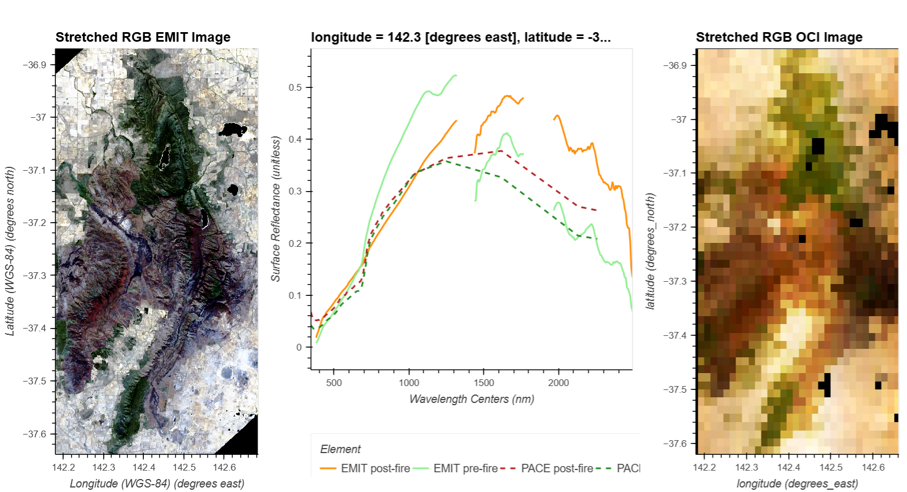
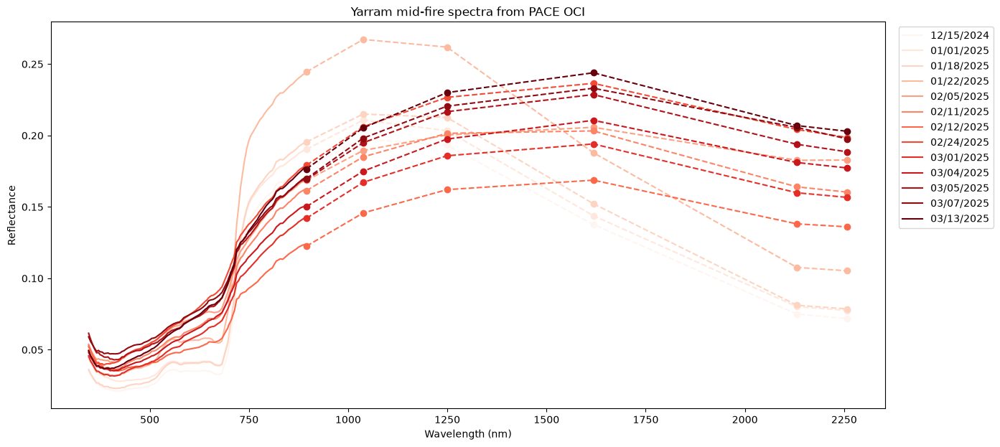

import cartopy
import skimage
import numpy as np
import xarray as xr
import hvplot.xarray
import holoviews as hv
import rioxarray as rio
import geopandas as gpd
import cartopy.crs as ccrs
import matplotlib.pyplot as plt
import earthaccess
from pathlib import Path
NB_DIR = Path.cwd()
from vitals import pace_tools as pace
from vitals import emit_tools as emit
import warnings
warnings.filterwarnings('ignore')
def plot_features(ax, gridline_alpha=1):
"""
Function to add gridlines and cartopy features to a figure.
Args:
ax - matplotlib Axes object on which to plot the features
gridline_alpha - fractional opacity of gridlines on the plot. Will also
make sure x, y axes are labelled with lon/lats, respectively. 0 will
include axes labels but not plot gridlines
"""
for a in range(len(ax)):
ax[a].gridlines(draw_labels={"left": "y", "bottom": "x"}, linewidth=0.25, alpha=gridline_alpha)
ax[a].coastlines(linewidth=0.5)
ax[a].add_feature(cartopy.feature.OCEAN, edgecolor="w", linewidth=0.01)
ax[a].add_feature(cartopy.feature.LAND, edgecolor="w", linewidth=0.01)
ax[a].add_feature(cartopy.feature.LAKES, edgecolor="w", linewidth=0.01)
def _file_stem(f):
"""Get filename stem from a Path or fsspec file object."""
if hasattr(f, 'path'):
return Path(f.path.split('/')[-1]).stem
elif hasattr(f, 'info'):
return Path(f.info()['name'].split('/')[-1]).stem
return f.stemProcessing PACE and EMIT Data
Authors: Skye Caplan1 and Erik Bolch2
- Science Systems and Applications, Inc., NASA Goddard Space Flight Center.
- KBR Inc., contractor to the USGS Earth Observation Research and Science Center, NASA Land Processes Distributed Active Archive Center.
Last updated: 06/24/2026
An Earthdata Login account is required to access data from the NASA Earthdata system, including NASA PACE and EMIT data.
Summary
NASA’s Plankton, Aerosol, Cloud, ocean Ecosystem (PACE) satellite mission and Earth Surface Mineral Dust Source Investigation (EMIT) sensor aboard the International Space Station (ISS) both make hyperspectral observations of the Earth’s surface. Taking into account their different spectral, spatial, and temporal coverage, these instruments’ complementary capabilities provide a wealth of new opportunities when used in concert. In this series of tutorials, we will demonstrate how to find, prepare, and use data from PACE and EMIT together, illustrating both missions’ strengths and how they can help fill in each other’s gaps.
This is the second tutorial in the PACE-EMIT series. This notebook will demonstrate how to preprocess the reflectance data downloaded from the first tutorial, 01_Colocate_PACE_EMIT_data, so that they can be used together to investigate science questions. We will use functions from the emit_tools and pace_tools modules to orthorectify, geolocate, and merge EMIT and PACE Ocean Color Instrument (OCI) data where necessary. Those modules will then also be used to place OCI and EMIT granules on an equivalent, stackable grid. We can then compare the data from the two sensors. These techniques will also be integral to our case study analysis in the third tutorial, 03_Wildfires_with_PACE_EMIT.
Background
The goal of this tutorial series is to look at how EMIT and PACE OCI make complementary observations of the same location. Before getting to the science in notebook 3, the datasets require some preprocessing to help make working with them more intuitive. This is especially true considering we have data from two different instruments with unique orbit and observation characteristics.
Recall that the reflectances downloaded in the first notebook are in raw Level-2 (L2) data format, meaning both datasets are still in swath resolution. Additionally, neither dataset is geolocated or masked for quality issues. Referring to the instrument summary table below, we also know that EMIT and PACE OCI are not at the same spatial resolution, which can make comparing spectra more complicated. Using pre-written tools for each instrument, we can geolocate and grid the data so that each pixel is associated with a physical latitude/longitude coordinate. To deal with the different pixel sizes, we can either upscale PACE OCI to the finer EMIT grid, or downscale EMIT to the coarser PACE OCI grid, ensuring the data are stackable and directly comparable.
| Resolutions | EMIT | PACE OCI |
|---|---|---|
| Spatial | 60 m | 1.2 km (at nadir) |
| Temporal | Variable | 1 - 2 days |
| Spectral Range | 380 - 2500 nm | 350 - 895, with 7 multispectral SWIR bands from 935-2258 nm |
| Spectral Sampling | 7.5 nm | 2.5 nm, with 1.25 nm in some spectral regions |
Learning Objectives
At the end of this notebook, you will know how to: - Use prebuilt tools to orthorectify, merge, and geolocate EMIT and PACE OCI data - Upscale PACE OCI to EMIT resolution - Compare spectral signatures over a region of interest (ROI)
Contents
1. Setup
Begin by importing all of the packages used in this notebook, and defining some functions we will use in the notebook.
In the last notebook, we found and optionally downloaded EMIT and PACE data corresponding to pre-fire and post-fire days for the Grampians National Park fire in Victoria, Australia, as well as several PACE OCI granules between these days. Since we’ll be merging some adjacent scenes from EMIT and regridding data from the instruments to align, we need a standard extent for cropping and gridding. Open the grampians_bbox.geojson which is a bounding box generated from the grampians shapefile used in the first notebook.
# Set up extents with GDF
gdf_bbox = gpd.read_file(NB_DIR / "data/grampians_bbox.geojson")This notebook supports a download based or streaming workflow. The download workflow is usually the best pathway if outside the cloud and working on a local computer.The streaming workflow is typically recommended if working in the AWS us-west-2 cloud, where connection speeds are very fast.
The cell below provides the URLs for scenes used in this notebook, and logs in using your Earthdata Login, in case you need to re-download or want to stream the data.
# Define URLs for download
emit_urls = ["https://data.lpdaac.earthdatacloud.nasa.gov/lp-prod-protected/EMITL2ARFL.001/EMIT_L2A_RFL_001_20241114T035759_2431902_009/EMIT_L2A_RFL_001_20241114T035759_2431902_009.nc",
"https://data.lpdaac.earthdatacloud.nasa.gov/lp-prod-protected/EMITL2ARFL.001/EMIT_L2A_RFL_001_20241114T035759_2431902_009/EMIT_L2A_MASK_001_20241114T035759_2431902_009.nc",
"https://data.lpdaac.earthdatacloud.nasa.gov/lp-prod-protected/EMITL2ARFL.001/EMIT_L2A_RFL_001_20241114T035747_2431902_008/EMIT_L2A_RFL_001_20241114T035747_2431902_008.nc",
"https://data.lpdaac.earthdatacloud.nasa.gov/lp-prod-protected/EMITL2ARFL.001/EMIT_L2A_RFL_001_20241114T035747_2431902_008/EMIT_L2A_MASK_001_20241114T035747_2431902_008.nc",
"https://data.lpdaac.earthdatacloud.nasa.gov/lp-prod-protected/EMITL2ARFL.001/EMIT_L2A_RFL_001_20250319T022818_2507801_008/EMIT_L2A_RFL_001_20250319T022818_2507801_008.nc",
"https://data.lpdaac.earthdatacloud.nasa.gov/lp-prod-protected/EMITL2ARFL.001/EMIT_L2A_RFL_001_20250319T022818_2507801_008/EMIT_L2A_MASK_001_20250319T022818_2507801_008.nc",
"https://data.lpdaac.earthdatacloud.nasa.gov/lp-prod-protected/EMITL2ARFL.001/EMIT_L2A_RFL_001_20250319T022830_2507801_009/EMIT_L2A_RFL_001_20250319T022830_2507801_009.nc",
"https://data.lpdaac.earthdatacloud.nasa.gov/lp-prod-protected/EMITL2ARFL.001/EMIT_L2A_RFL_001_20250319T022830_2507801_009/EMIT_L2A_MASK_001_20250319T022830_2507801_009.nc"
]
# NOTE: We can use a handful of these or only host the subsets to reduce data size if necessary (sc)
pace_urls = ['https://obdaac-tea.earthdatacloud.nasa.gov/ob-cumulus-prod-public/PACE_OCI.20241114T035224.L2.SFREFL.V3_1.nc',
'https://obdaac-tea.earthdatacloud.nasa.gov/ob-cumulus-prod-public/PACE_OCI.20241215T033822.L2.SFREFL.V3_1.nc',
'https://obdaac-tea.earthdatacloud.nasa.gov/ob-cumulus-prod-public/PACE_OCI.20250101T033916.L2.SFREFL.V3_1.nc',
'https://obdaac-tea.earthdatacloud.nasa.gov/ob-cumulus-prod-public/PACE_OCI.20250118T033938.L2.SFREFL.V3_1.nc',
'https://obdaac-tea.earthdatacloud.nasa.gov/ob-cumulus-prod-public/PACE_OCI.20250122T041511.L2.SFREFL.V3_1.nc',
'https://obdaac-tea.earthdatacloud.nasa.gov/ob-cumulus-prod-public/PACE_OCI.20250205T040925.L2.SFREFL.V3_1.nc',
'https://obdaac-tea.earthdatacloud.nasa.gov/ob-cumulus-prod-public/PACE_OCI.20250211T042542.L2.SFREFL.V3_1.nc',
'https://obdaac-tea.earthdatacloud.nasa.gov/ob-cumulus-prod-public/PACE_OCI.20250212T032254.L2.SFREFL.V3_1.nc',
'https://obdaac-tea.earthdatacloud.nasa.gov/ob-cumulus-prod-public/PACE_OCI.20250224T035613.L2.SFREFL.V3_1.nc',
'https://obdaac-tea.earthdatacloud.nasa.gov/ob-cumulus-prod-public/PACE_OCI.20250301T033714.L2.SFREFL.V3_1.nc',
'https://obdaac-tea.earthdatacloud.nasa.gov/ob-cumulus-prod-public/PACE_OCI.20250304T034526.L2.SFREFL.V3_1.nc',
'https://obdaac-tea.earthdatacloud.nasa.gov/ob-cumulus-prod-public/PACE_OCI.20250305T042058.L2.SFREFL.V3_1.nc',
'https://obdaac-tea.earthdatacloud.nasa.gov/ob-cumulus-prod-public/PACE_OCI.20250307T035339.L2.SFREFL.V3_1.nc',
'https://obdaac-tea.earthdatacloud.nasa.gov/ob-cumulus-prod-public/PACE_OCI.20250313T041003.L2.SFREFL.V3_1.nc',
'https://obdaac-tea.earthdatacloud.nasa.gov/ob-cumulus-prod-public/PACE_OCI.20250319T042120.L2.SFREFL.V3_1.nc',
]Download Workflow
If you did not download the data in 01_Colocate_PACE_EMIT_Data.ipynb, you can uncomment the two cells below. If you’ve already downloaded the data in the first notebook, uncomment only the second cell below to set the filepaths for the scenes you’ve already downloaded.
# Download Data
earthaccess.login()
emit_paths = earthaccess.download(emit_urls, "data/")
oci_paths = earthaccess.download(pace_urls, "data/")# Download Workflow
emit_paths = sorted((NB_DIR / "data").glob("EMIT_L2A*.nc"))
oci_paths_all = sorted((NB_DIR / "data").glob("PACE_OCI*.nc"))
oci_paths = [oci_paths_all[0], oci_paths_all[-1]]
oci_ts_paths = oci_paths_all[1:-1]Cloud Workflow
To stream the data, uncomment out the following cell to construct S3 URLs from the existing URL lists and open them using earthaccess.open.
# # Cloud Workflow
# earthaccess.login()
# # Sort the EMIT URLs since they contain both RFL and MASK files then open with earthaccess
# emit_paths = earthaccess.open(
# sorted(
# [u.replace('https://data.lpdaac.earthdatacloud.nasa.gov/', 's3://') for u in emit_urls],
# key=lambda u: u.split('/')[-1]
# ), provider = "LPCLOUD", open_kwargs={"max_concurrency": 20}
# )
# # Repeat the Same for the PACE Scenes
# oci_paths = earthaccess.open(
# sorted(
# [u.replace('https://obdaac-tea.earthdatacloud.nasa.gov/', 's3://') for u in [pace_urls[0], pace_urls[-1]]],
# key=lambda u: u.split('/')[-1]
# ), provider= "OB_CLOUD", open_kwargs={"max_concurrency": 20}
# )
# oci_ts_paths = earthaccess.open(
# sorted(
# [u.replace('https://obdaac-tea.earthdatacloud.nasa.gov/', 's3://') for u in pace_urls[1:-1]],
# key=lambda u: u.split('/')[-1]
# ), provider="OB_CLOUD", open_kwargs={"max_concurrency": 20}
# )2. Preprocessing Instrument Data
Before we can use these data for science, there are a couple steps we should take to preprocess the files so that they are easier to handle in the long run. Recall from the previous tutorial that we are using Level-2 (L2) data. Raw L2 data are still in the instrument swath, or in other words, not geolocated or on any type of uniform grid. As such, our pixels are yet associated with any coordinates, and can represent different sizes on the ground. This is especially true in the case of PACE OCI, since its swath is very wide, but applies to EMIT as well. The first notebook also showed that our region of interest (ROI) spans two EMIT granules, but is only a small part of any PACE OCI scenes. To simplify our workflow and minimize the size of our datasets, we can use tools written specifically for managing these instruments’ data. We’ll preprocess the data from each mission separately to work with their distinct characteristics, demonstrating a few different ways of handling data.
EMIT Data
For EMIT data, we want to orthorectify, geolocate, and merge the pre-fire granules and post-fire granules, respectively, so that we have one file for each date covering the full ROI. The cell below contains a function which combines all of these steps into one by calling functions from the emit_tools module. More information on the tools below can be found in the EMIT-Data-Resources repository.
Briefly, the process_and_merge_emit function calls on emit_xarray to open both the reflectance and mask files, and uses the mask to remove any unwanted pixels (clouds, bad data bands, etc.). Then, the spatial_subset function is called to clip the data only to the ROI, in this case a bounding box around Grampians National Park. Finally, both granules are merged so the ROI is contained in one file, and that file is saved in an output directory of the user’s choice.
def process_and_merge_emit(rfl_paths, mask_paths, polygon_path, mask_bands, outdir):
"""Preprocess a list of EMIT RFL+MASK pairs and write a single merged NetCDF.
Args:
rfl_paths - list of Paths to EMIT reflectance files to process
mask_paths - list of Paths to EMIT mask files corresponding the reflectance
paths to use in processing
polygon_path - Path to polygon to use for subsettnig
mask_bands - list of which EMIT mask bands to use
outdir - Path to save merged output to
Returns:
out_path - Path to merged output
"""
outdir.mkdir(parents=True, exist_ok=True)
out_path = outdir / f"{_file_stem(rfl_paths[0])}_ortho_merged.nc"
if out_path.exists():
print("Output already exists!")
return out_path
gdf = gpd.read_file(polygon_path)
scenes = []
for rfl_path, mask_path in zip(rfl_paths, mask_paths):
rfl_ds = emit.emit_xarray(rfl_path)
rfl = emit.spatial_subset(rfl_ds, gdf)
del rfl_ds
mask_ds = emit.emit_xarray(mask_path)
mask = (emit.spatial_subset(mask_ds, gdf)["mask"]
.sel(mask_bands=mask_bands).any("mask_bands").astype(int))
del mask_ds
rfl["reflectance"].values[mask.values == 1, :] = np.nan
scenes.append(emit.ortho_xr(rfl))
del rfl
merged = emit.merge_emit(scenes, gdf)
del scenes
merged.to_netcdf(out_path)
return out_pathWe set up the arguments for the process_and_merge_emit function in the cell below. Let’s also print out the list of sorted EMIT files so we know which indices to use for the function call.
OUTDIR = NB_DIR / "data" / "outputs"
gdf_path = NB_DIR / "data/grampians_bbox.geojson"
mask_bands = ['Cloud flag','Cirrus flag','Water flag','Spacecraft Flag']
emit_paths[WindowsPath('C:/Users/ebolch/repos/VITALS/python/emit_pace/data/EMIT_L2A_MASK_001_20241114T035747_2431902_008.nc'),
WindowsPath('C:/Users/ebolch/repos/VITALS/python/emit_pace/data/EMIT_L2A_MASK_001_20241114T035759_2431902_009.nc'),
WindowsPath('C:/Users/ebolch/repos/VITALS/python/emit_pace/data/EMIT_L2A_MASK_001_20250319T022818_2507801_008.nc'),
WindowsPath('C:/Users/ebolch/repos/VITALS/python/emit_pace/data/EMIT_L2A_MASK_001_20250319T022830_2507801_009.nc'),
WindowsPath('C:/Users/ebolch/repos/VITALS/python/emit_pace/data/EMIT_L2A_RFL_001_20241114T035747_2431902_008.nc'),
WindowsPath('C:/Users/ebolch/repos/VITALS/python/emit_pace/data/EMIT_L2A_RFL_001_20241114T035759_2431902_009.nc'),
WindowsPath('C:/Users/ebolch/repos/VITALS/python/emit_pace/data/EMIT_L2A_RFL_001_20250319T022818_2507801_008.nc'),
WindowsPath('C:/Users/ebolch/repos/VITALS/python/emit_pace/data/EMIT_L2A_RFL_001_20250319T022830_2507801_009.nc')]We can then call the function with the correct filepaths. Note that this cell should take about a minute to run fully. The resulting files will be merged, masked, and subsetted to the ROI.
prefire_emit_path = process_and_merge_emit(rfl_paths=emit_paths[4:6],
mask_paths=emit_paths[0:2],
polygon_path=gdf_path,
mask_bands=mask_bands,
outdir=OUTDIR)
postfire_emit_path = process_and_merge_emit(rfl_paths=emit_paths[6:8],
mask_paths=emit_paths[2:4],
polygon_path=gdf_path,
mask_bands=mask_bands,
outdir=OUTDIR)Output already exists!
Output already exists!Once processing is complete, we can take a look at the contents of the merged files, and plot the data as well.
prefire_emit_ds = xr.open_dataset(prefire_emit_path)
postfire_emit_ds = xr.open_dataset(postfire_emit_path)
prefire_emit_ds<xarray.Dataset> Size: 2GB
Dimensions: (latitude: 1420, longitude: 931, wavelengths: 285)
Coordinates:
* latitude (latitude) float64 11kB -36.87 -36.87 ... -37.64 -37.64
* longitude (longitude) float64 7kB 142.2 142.2 142.2 ... 142.7 142.7
elev (latitude, longitude) float32 5MB ...
* wavelengths (wavelengths) float32 1kB 381.0 388.4 ... 2.493e+03
good_wavelengths (wavelengths) float32 1kB ...
fwhm (wavelengths) float32 1kB ...
Data variables:
reflectance (latitude, longitude, wavelengths) float32 2GB ...
spatial_ref int64 8B ...
Attributes: (12/41)
ncei_template_version: NCEI_NetCDF_Swath_Template_v2.0
summary: The Earth Surface Mineral Dust Source ...
keywords: Imaging Spectroscopy, minerals, EMIT, ...
Conventions: CF-1.63
sensor: EMIT (Earth Surface Mineral Dust Sourc...
instrument: EMIT
... ...
geotransform: [ 1.42180140e+02 5.42232520e-04 0.00...
day_night_flag: Day
title: EMIT L2A Estimated Surface Reflectance...
granule_id: EMIT_L2A_RFL_001_20241114T035747_24319...
subset_downtrack_range: [ 388 1279]
subset_crosstrack_range: [ 0 1232]fig, ax = plt.subplots(1,2, figsize=(9,5),sharey=True,
subplot_kw={"projection": ccrs.PlateCarree()})
fig.tight_layout(pad=0.5)
im = prefire_emit_ds["reflectance"].sel(wavelengths=860,
method="nearest").plot(ax=ax[0],vmin=0, vmax=0.6,
add_colorbar=False)
postfire_emit_ds["reflectance"].sel(wavelengths=860,
method="nearest").plot(ax=ax[1],vmin=0, vmax=0.6,
add_colorbar=False)
plot_features(ax.flatten(), gridline_alpha=0)
bbox = [141.9385, -37.74163, 142.77324, -36.79961]
cax = fig.add_axes([1.0025, 0.03, 0.03, 0.94])
fig.colorbar(im, cax=cax, label="Surface Reflectance")
ax[0].set_title("Pre-Fire EMIT Reflectance at 860 nm")
ax[1].set_title("Post-Fire EMIT Reflectance at 860 nm")
plt.show()
We have successfully clipped our EMIT data, and the data represent physical locations with coordinates. Let’s do the same for the PACE OCI reflectances.
PACE OCI Data
For PACE data, we’ll need to subset, mask, and geolocate each granule. A merge is not needed since the full ROI is contained in each scene. The pace_tools module provides a suite of functions for working with PACE OCI data, similar to the emit_tools module, which the process_pace function calls below to accomplish the preprocessing.
Briefly, the function uses the open_l2 and mask_ds functions to remove pixels containing clouds or water. Then, the grid_data function is called with a user-defined resolution to grid the data. We will use a resolution of 0.015 degrees (~1.67 km at the equator) to account for OCI’s wide swath. Once the data is gridded, xarray’s .sel() method can be used to subset the data based on the coordinates of a bounding box. More information on these tools can be found on the Help Hub.
Note that in the following cells, we’ll process both the pre-fire and post-fire data as well as the time series data across that time period. These cells may take some time to complete due to the size of the files. This cell may take ~10 minutes depending on your connection speed. Occasionally, when working in the cloud, these cells can hang and run without producing any outputs. Stop the kernel with the stop button and re-run the cell. It should pick up from the last file processed.
def process_pace(pace_path, resolution, bbox, outdir):
out_path = outdir / f"{_file_stem(pace_path)}_ortho_subset.nc"
if out_path.exists():
print("Output already exists!")
return out_path
# Load the full data here to avoid an issue with fsspec/datatree
ds = pace.open_l2(pace_path).load()
# Close the earthaccess connection and dataset connection to the source file after the data is loaded into memory
# this seems to improve reliability of the processing loops in the following cells when working in the cloud.
if hasattr(pace_path, 'close'):
pace_path.close()
ds.close()
# Mask Data
ds = pace.mask_ds(ds, flag=["CLDICE","LAND"], reverse=[False,True])
# Project onto a rectilinear grid
ds = pace.grid_data(ds, resolution=resolution)
# Slice to area of interest
ds_sub = ds.sel({"latitude":slice(bbox[3],bbox[1]), "longitude":slice(bbox[0],bbox[2])})
del ds
# Write Output
ds_sub.to_netcdf(out_path)
del ds_sub
return out_path
resolution = (0.015,0.015)pace_subsets = [process_pace(oci_path, resolution, gdf_bbox.total_bounds, OUTDIR) for oci_path in oci_paths]Output already exists!
Output already exists!pace_ts_subsets = [process_pace(oci_path , resolution, gdf_bbox.total_bounds, OUTDIR) for oci_path in oci_ts_paths]Output already exists!
Output already exists!
Output already exists!
Output already exists!
Output already exists!
Output already exists!
Output already exists!
Output already exists!
Output already exists!
Output already exists!
Output already exists!
Output already exists!
Output already exists!Let’s plot the output pre- and post-fire OCI granules to see the processed data:
prefire_oci_ds = xr.open_dataset(pace_subsets[0])
postfire_oci_ds = xr.open_dataset(pace_subsets[1])
fig, ax = plt.subplots(1,2, figsize=(9,5),sharey=True,
subplot_kw={"projection": ccrs.PlateCarree()})
fig.tight_layout(pad=0.5)
prefire_oci_ds["rhos"].sel(wavelength_3d=860,
method="nearest").plot(ax=ax[0],vmin=0, vmax=0.6, add_colorbar=False)
im = postfire_oci_ds["rhos"].sel(wavelength_3d=860,
method="nearest").plot(ax=ax[1],vmin=0, vmax=0.6, add_colorbar=False)
plot_features(ax.flatten(), gridline_alpha=0)
cax = fig.add_axes([1.0025, 0.03, 0.03, 0.94])
fig.colorbar(im, cax=cax, label='Surface Reflectance')
ax[0].set_title("Pre-Fire PACE Reflectance at 860 nm")
ax[1].set_title("Post-Fire PACE Reflectance at 860 nm")
plt.show()
The preprocessing for PACE data has worked as well! A quick glance at the above OCI plots compared to those from EMIT illustrates the difference in spatial scale covered by the two missions, but the overall reflectances at 860 nm look similar.
We can compare full spectra from both instruments for a more detailed view of the data. This could be done by using both datasets at their nominal resolutions, but some analyses may benefit from or even require a PACE dataset with the same resolution as the EMIT dataset (or vice versa). For example, upscaling methods are often employed to prepare a consistent grid for analysis when the goal is to preserve fine resolution details from the higher resolution dataset. Coarsening, on the other hand, can be useful to reduce noise in high-resolution imagery, or to reduce file sizes for large scale regional and global studies.
Upscaling the OCI data would be useful for the next tutorial in this series since we want to retain features from the EMIT scene while having both datasets on the same grid. We’ll use the grid_data function from the pace_tools module to regrid our OCI data to a finer resolution.
3. Grid Alignment
First, let’s get an idea of what the original EMIT and PACE grids look like overlaid on one another.
fig, ax = plt.subplots(figsize=(13,5), subplot_kw=dict(projection=ccrs.PlateCarree()))
prefire_oci_ds["rhos"].sel({"wavelength_3d":860}, method="nearest").plot(vmin=-1, vmax=0, cmap="Greys_r", transform=ccrs.PlateCarree(),linewidth=2, edgecolors="red", add_colorbar=False)
prefire_emit_ds["reflectance"].sel({"wavelengths":860}, method="nearest").plot(vmin=0, vmax=1, cmap="viridis", transform=ccrs.PlateCarree(), linewidth=0.05, edgecolors="k", add_colorbar=False, alpha=1)
ax.set_extent([142.615, 142.64, -37.625, -37.60])
ax.gridlines(draw_labels={"left": "y", "bottom": "x"}, alpha=0.0)
ax.set_title("Pixel Sizes")
plt.show()
The discrepancy in pixel size here can be fixed by regridding OCI data with EMIT’s specification. Thanks to the processing steps we took in Section 2, we have access to the EMIT grid parameters in the form of its affine transform. We can feed that tranform into the grid_data function to coerce the PACE data into that shape.
It is important to note that sharpening the data does not increase the information content of the data.
In other words, this approach will be using existing values to fill a larger quantity of pixels covering the same spatial extent, enabling us to stack granules and compare spectra, do band math, and more.
prefire_oci_finer = pace.grid_data(src=prefire_oci_ds,
dst_transform=prefire_emit_ds.rio.transform())
postfire_oci_finer = pace.grid_data(src=postfire_oci_ds,
dst_transform=postfire_emit_ds.rio.transform())After the regridding is done, we can plot the pixel boundaries again to see if they align as we intend them to.
fig, ax = plt.subplots(figsize=(13,5), subplot_kw=dict(projection=ccrs.PlateCarree()))
prefire_oci_finer["rhos"].sel({"wavelength_3d":860},
method="nearest").plot(vmin=-1, vmax=0, cmap="Greys_r",
transform=ccrs.PlateCarree(),
linewidth=2, edgecolors="red",
add_colorbar=False)
prefire_emit_ds["reflectance"].sel({"wavelengths":860},
method="nearest").plot(vmin=0, vmax=1,
transform=ccrs.PlateCarree(),
linewidth=0.05, edgecolors="k",
add_colorbar=False)
ax.set_extent([142.615, 142.64, -37.625, -37.60])
ax.gridlines(draw_labels={"left": "y", "bottom": "x"}, alpha=0.0)
ax.set_title("Pixel Alignment")
plt.show()
With the plot above, we can see that the pixels now align. Take a look at the shape of each dataset, as well - their x and y dimensions should match in size.
4. Spectral Comparisons
With our granules now preprocessed and on the same grid, we can look at what some of the full spectral information looks like for our pre- and post-fire datasets. First, to simplify the plotting, we’ll make sure our variable names are the same between each dataset by renaming the PACE variables. We’ll also change EMIT’s nodata values to np.nan instead of -9999, which would affect the color bar.
# Band Masking for EMIT
prefire_emit_ds['reflectance'].data[:,:,prefire_emit_ds['good_wavelengths'].data==0] = np.nan
postfire_emit_ds['reflectance'].data[:,:,postfire_emit_ds['good_wavelengths'].data==0] = np.nan
# Rename PACE Vars
postfire_oci_finer = postfire_oci_finer.rename({
"rhos": "reflectance",
"wavelength_3d": "wavelengths",
})
prefire_oci_finer = prefire_oci_finer.rename({
"rhos": "reflectance",
"wavelength_3d": "wavelengths",
})We’ll then use hvplot to create a hoverplot displaying the spectral data. The cells below create true color images from the post-fire OCI and EMIT datasets, which you can then hover over to show what the spectra from each time point and sensor look like.
def scale_for_rgb(d_in):
d_in = np.where(np.isnan(d_in), -9999, d_in)
d = np.where(d_in < -9990, np.nan, d_in)
d_out = np.zeros_like(d)
for i in np.arange(d.shape[-1]):
mi, ma = np.nanpercentile(d[:, :, i], [.5, 99.5])
di = skimage.exposure.rescale_intensity(d_in[:, :, i], in_range=(mi, ma))
if ~np.all(np.isnan(di)):
di = skimage.exposure.equalize_hist(di)
d_out[:, :, i] = skimage.exposure.rescale_intensity(
di, in_range=(di.min(), di.max())
)
return np.where(d_in > -9990, d_out, -9999)
rgb_ds_emit = postfire_emit_ds['reflectance'].sel(wavelengths=[650,560,470], method='nearest')
rgb_ds_oci = postfire_oci_finer['reflectance'].sel(wavelengths=[650,560,470], method='nearest')
rgb_ds_emit.data = scale_for_rgb(rgb_ds_emit.data)
rgb_ds_oci.data = scale_for_rgb(rgb_ds_oci.data)rows, cols = len(rgb_ds_emit.latitude), len(rgb_ds_emit.longitude)
scene_center = rgb_ds_emit.latitude.values[int(rows/2)],rgb_ds_emit.longitude.values[int(cols/2)]
datasets = {
"EMIT pre-fire": prefire_emit_ds,
"PACE pre-fire": prefire_oci_finer,
"EMIT post-fire": postfire_emit_ds,
"PACE post-fire": postfire_oci_finer,
}
colors = {
"EMIT pre-fire": "lightgreen",
"PACE pre-fire": "forestgreen",
"EMIT post-fire":"darkorange",
"PACE post-fire":"firebrick",
}
line_styles = {
"EMIT pre-fire": "solid",
"EMIT post-fire": "solid",
"PACE pre-fire": "dashed",
"PACE post-fire": "dashed",
}
# Set Start Position
x_start = scene_center[1]
y_start = scene_center[0]
# Plot RGB
rgb_map_emit = rgb_ds_emit.hvplot.rgb(
x="longitude", y="latitude", bands="wavelengths",
crs=ccrs.PlateCarree(),
title="Stretched RGB EMIT Image",
frame_width=240, frame_height=480
)
# Plot RGB
rgb_map_oci = rgb_ds_oci.hvplot.rgb(
x="longitude", y="latitude", bands="wavelengths",
crs=ccrs.PlateCarree(),
title="Stretched RGB OCI Image",
frame_width=240, frame_height=480
)
# Pointer stream
posxy = hv.streams.PointerXY(source=rgb_map_emit, x=x_start, y=y_start)
# Hover spectra function
def hover_spectra(x, y):
plots = {}
for label, ds in datasets.items():
plots[label] = (
ds["reflectance"]
.sel(longitude=x, latitude=y, method="nearest")
.hvplot.line(
x="wavelengths", y="reflectance",
label=label, color=colors[label],
line_dash=line_styles[label],
frame_width=380,frame_height=380
)
)
return hv.NdOverlay(plots).opts(
legend_position="bottom",
show_legend=True
)
hover_dmap = hv.DynamicMap(hover_spectra, streams=[posxy])
# Set Layout
hv.Layout(rgb_map_emit + hover_dmap + rgb_map_oci).cols(3).opts(
hv.opts.Overlay(show_legend=True, fontscale=1.3, frame_height=480),
)
Mid-fire Time Series
So far, we have focused on the individual pre- and post-fire data from EMIT and OCI, but we also have OCI data from in between those days that we can explore. This area was subject to two forest fires, one of which (the Yarram Gap Road fire) started on December 16th. Let’s take a slice of the area burned in that fire and look at the median spectrum over time, using each of the 12 OCI granules we gathered through the course of the fire.
Looking at the plot below, we can see that as time progressed, the fire expanded over the full slice of the park we are looking at. The spectral signatures shifted, going from a classic representation of live, healthy vegetation to those which clearly show the transition to burnt material. The next two notebooks in this series will use the features of these time series spectra to characterize the fires which took place in our ROI.
cmap = plt.get_cmap("Reds")
rgbs = cmap(np.linspace(0, 1, len(pace_ts_subsets)))
fig, ax = plt.subplots(figsize=(15,7))
for i in range(len(pace_ts_subsets)):
ts=pace_ts_subsets[i].name[9:17]
ds = xr.open_dataset(pace_ts_subsets[i])
# Select section to compute the median on for the Yarram fire
ds_yarram = ds["rhos"].sel({"longitude":slice(142.2, 142.3),
"latitude":slice(-37.28, -37.4)}).median(dim=["latitude", "longitude"])
ax.plot(ds["wavelength_3d"][:-6], ds_yarram[:-6], c=rgbs[i], label=f"{ts[4:6]}/{ts[6:]}/{ts[:4]}")
ax.plot(ds["wavelength_3d"][-6:], ds_yarram[-6:], c=rgbs[i], ls='--', marker='o')
ax.set_title("Yarram mid-fire spectra from PACE OCI")
ax.set_xlabel("Wavelength (nm)")
ax.set_ylabel("Reflectance")
ax.legend(bbox_to_anchor=(1.01, 1), loc="upper left")
plt.show()

You have completed the second notebook in the PACE+EMIT series. We plan to add a third notebook, 03_Wildfires_with_PACE_EMIT, which uses the data we processed here to further investigate the wildfires which occurred in Grampians National Park, Victoria, Australia in 2024-2025.